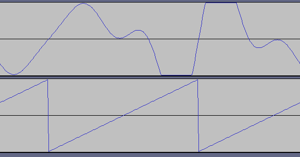
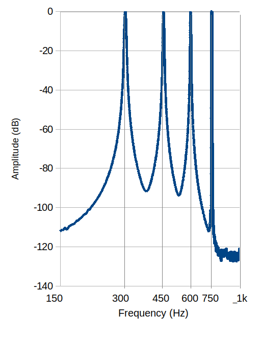

Why pitch is not the same as frequency
 To some extent, "pitch" is just a musical term for what a physicist would
call "frequency". In conventional orchestral tuning, for example,
the note "A" above middle C has a frequency of 440 Hz. The pitch
an octave above that A has double the frequency, 880Hz, and so on.
Pitch, in other words, is just a musical word for frequency.
Two notes of the same pitch have the same frequency, right?
To some extent, "pitch" is just a musical term for what a physicist would
call "frequency". In conventional orchestral tuning, for example,
the note "A" above middle C has a frequency of 440 Hz. The pitch
an octave above that A has double the frequency, 880Hz, and so on.
Pitch, in other words, is just a musical word for frequency.
Two notes of the same pitch have the same frequency, right?
Well, no. In physics, frequency is a well-defined, measurable quantity -- it's the number of times something repeats in one unit of time. In music, pitch is how we perceive frequency. The distinction might appear to be a nit-picking one but, in fact, it isn't.
Consider the following two musical samples. They're in FLAC format because, although MP3 would be more compact, this demonstration doesn't work so well with lossy audio compression. The first sample is a mathematically-generated perfect sawtooth wave; the second is, well, something different. The comparison will work best with the samples played over decent speakers or headphones; but it will probably work even when played on a laptop or phone speaker. This is remarkable in itself, as we shall see.
300 Hz sawtooth tone
Simulated 150Hz sawtooth tone
Almost everybody perceives the second sample as having a pitch an octave lower than the first, that is, half the frequency (150 Hz), and having a similar timbre. But, in fact, both these samples have a frequency -- at least a fundamental frequency -- of 300 Hz.
By way of illustration, the waveforms shown below are of the simulated 150Hz tone (top) and the 300 Hz tone (bottom) on the same time axis. Although they aren't in phase, it's pretty clear that both waveforms have the same period (3.33 msec, as it turns out). The simulated 150 Hz tone has a much more complicated structure, which is what gives rise to the phenomenon.

If you heard the pitch illusion on a laptop or phone speaker, that's even more remarkable, because your speaker's frequency response probably does not even extend down to 150 Hz. The sound you perceive is one that the speaker probably can't even produce.
The key to understanding this oddity is to understand that natural music (and speech) tones are not composed of pure sinewaves. So far as I know, no musical instrument produces a pure sinewave. A nylon guitar string, plucked gently, is almost a sinewave after the initial plucking sound has died away, but even that isn't perfect.
Consider a bowed string, as on a violin. The string will vibrate in many modes simultaneously whilst it is being bowed. The lowest-frequency mode of vibration will be along the whole length of the string. This mode has the maximum amplitude of deflection of the string about half-way along its length, whilst the ends of the string are held completely still by the bridge and the nut.
There will also be another mode of vibration, where the centre of the string is stationary, with vibrational maxima at the one-quarter and three-quarter length points. This mode of vibration has twice the frequency of the full-length vibration. There will be another mode at three times the frequency, then another at four times, and so on. The modes are not of equal amplitude, and their amplitudes vary according to how the string is bowed. It is this combination of frequencies that gives the violin its distinctive timbre.
The frequency mode that corresponds to the full length of the string is generally called the 'fundamental', while the higher frequencies are called either 'overtones' or 'harmonics'. In general, musicians seem to prefer the term 'overtones', while physicists prefer 'harmonics'.
We see the same kind of harmonics generated in all music instruments that work by mechanical vibration. For example, the column of air in a flute or clarinet has multiple vibrational modes. The skin of a tuned drum has an even more complex vibrational pattern, because it's three-dimensional.
The harmonic structure of a mathematically-perfect sawtooth wave isn't hugely different from that of a bowed violin string -- there's a fundamental, and a series of harmonics at gradually decreasing amplitudes. So the "A" above middle C has has the fundamental at 440 Hz, and higher harmonics at 1320Hz, 2200 Hz, and so on.
Let's look at the frequency spectrum of the simulated 150 Hz tone. I generated this plot using a software spectrum analyser although, in fact, I know exactly what its frequency components are, because I generated them in software. But checking the spectrum is something you can do yourself on the FLAC files, if you don't believe me (and many people don't).

The simulated 150Hz tone actually has four harmonics: at 300 Hz, 450 Hz, 600 Hz, and 750 Hz. Although it isn't clear in the displayed spectrum, these harmonics have gradually-decreasing amplitudes, as is the case with most musical tones. What's most important is that the spectrum shows nothing at 150 Hz -- but we could have guessed that by looking at the waveform, which repeats at the same frequency as a 300 Hz sawtooth.
The overtones of the simulated 150 Hz tone don't correspond to any musical instrument -- not one that I know about, anyway. As the fundamental frequency is 300 Hz, if this were a musical tone the next harmonic would be at 600 Hz or higher, not 450 Hz.
If an instrument playing at 300 Hz wouldn't have harmonics at 450 Hz and 750 Hz, what would? In case you haven't guessed -- it's an instrument playing at 150 Hz. A 150 Hz sawtooth, or a bowed violin string, would have harmonics and 300 Hz, 450 Hz, 600 Hz, and 750 Hz -- exactly as the simulated tone does.
It turns out that the human ear-brain combination is very good at harmonic analysis. The structure of the cochlea -- the sensor part of the ear -- is a resonating chamber with a huge number of distinct frequency sensors. The analysis isn't done in the brain entirely -- the first part of the analysis is done in the ear itself.
In early life we become very familiar with the sounds created by vibrating bodies -- most obviously the human voice. Vocal sounds are caused by the vibration of the air column in the trachea. We develop an expectation that a tone will have a particular pattern of harmonics, broadly matching those of the voice. This expectation is so strong that we interpret the simulated 150 Hz tone as a pattern of harmonics that matches an object vibrating at 150 Hz -- even though there is absolutely no vibrational component at that frequency. In short, our ear-brain combination pays more heed to the frequency components than to the fundamental frequency, when assigning a pitch to a sound.
There's another very simple way to hear the phenomenon described in this article, if you have a piano (electronic or acoustic) available. Just play the bottom (left-hand) octave of the piano, as a descending scale. I would imagine that you hear each note in this scale as a lower pitch than the preceding one. And, yet, if your piano is conventionally tuned, the lowest five notes (at least) are below the usual limit of human hearing (20 Hz).
If you play the lowest two octaves of the piano as a descending scale, you'll probably notice a distinct change in timbre somewhere between the two octaves. Although the pitches (as perceived) continue to decrease as you play down the keyboard, at some point your ear loses the ability to respond to the very lowest, fundamental frequency. However, the overtones corresponding to that fundamental frequency are still present, and still registered by your ear. So your brain fills in the missing fundamental, and assigns the pitch of that fundamental to the note you perceive. However, the bottom few notes sound "tinny" (lacking a better word), presumably because we can't hear the fundamental frequency.
In short, pitch isn't the same as frequency. "Pitch" is something we perceive, based on frequency analysis caused by our brains. It may, or may not, correspond to frequency in a specific musical tone.